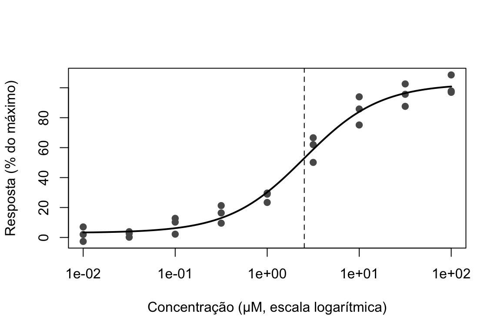

Capítulo 11 Aplicações práticas e estudos de caso
Hércules Rezende Freitas, Ph.D.\(^1\)
\(^1\)Universidade do Estado do Rio de Janeiro (UERJ), Faculdade de Ciências Médicas, Departamento de Ciências Médicas Integradas, Laboratório de Informática em Saúde (LabInfoS), Cabo Frio/RJ, Brasil.
Este capítulo aplica os métodos dos capítulos anteriores a problemas típicos de quatro áreas: epidemiologia e saúde pública, genética e biologia molecular, ecologia e conservação, e farmacologia e ensaios clínicos. Cada seção apresenta os métodos mais característicos da área, com exemplos resolvidos e código em R, e destaca os erros mais frequentes. Os dados são fictícios ou simulados, construídos para ilustrar os cálculos.
11.1 Epidemiologia e saúde pública
11.1.1 Intervalos de confiança para medidas de associação
O capítulo Desenhos de pesquisa apresentou o risco relativo (RR), a razão de chances (OR), a diferença de riscos (DR) e o número necessário para tratar ou para causar dano (NNT/NNH). Como qualquer estimativa, essas medidas precisam de intervalos de confiança. Retomamos o exemplo da coorte daquele capítulo: 80 casos entre 2.000 fumantes e 30 casos entre 3.000 não fumantes, em cinco anos. Na notação da tabela 2 × 2, \(a = 80\), \(b = 1.920\), \(c = 30\) e \(d = 2.970\).
Risco relativo. A distribuição amostral do RR é assimétrica (ele não pode ser negativo e pode crescer sem limite), mas a do seu logaritmo é aproximadamente normal. Por isso, o intervalo é calculado na escala logarítmica e depois transformado de volta (Katz et al. 1978):
\[ \begin{gathered} \text{EP}[\ln(\text{RR})] = \sqrt{\frac{1}{a} - \frac{1}{a+b} + \frac{1}{c} - \frac{1}{c+d}}, \\ \text{IC}_{95\%} = \exp\left[\ln(\text{RR}) \pm 1{,}96 \times \text{EP}\right]. \end{gathered} \]
No exemplo, \(\ln(4) = 1{,}386\) e \(\text{EP} = \sqrt{1/80 - 1/2.000 + 1/30 - 1/3.000} \approx 0{,}212\). O intervalo é \(\exp(1{,}386 \pm 0{,}416)\), de 2,64 a 6,06. Note que o intervalo não é simétrico em torno de 4: a assimetria na escala original é consequência da simetria na escala logarítmica.
Razão de chances. O método de Woolf (Woolf 1955) segue a mesma lógica:
\[ \text{EP}[\ln(\text{OR})] = \sqrt{\frac{1}{a} + \frac{1}{b} + \frac{1}{c} + \frac{1}{d}} . \]
No exemplo, \(\text{OR} = 4{,}125\), \(\text{EP} \approx 0{,}216\) e o IC de 95% vai de 2,70 a 6,30.
Diferença de riscos. O intervalo mais simples (de Wald) é \(\text{DR} \pm 1{,}96\sqrt{p_1(1-p_1)/n_1 + p_0(1-p_0)/n_0}\), mas, assim como o intervalo de Wald para uma proporção (capítulo Bioestatística inferencial), tem cobertura ruim quando os riscos são pequenos ou as amostras são pequenas. O método de Newcombe (Newcombe 1998) combina os intervalos de Wilson de cada proporção e tem desempenho muito melhor. Sendo \((l_1, u_1)\) e \((l_0, u_0)\) os intervalos de Wilson de \(p_1\) e \(p_0\):
\[ \begin{aligned} \text{limite inferior} &= \text{DR} - \sqrt{(p_1 - l_1)^2 + (u_0 - p_0)^2}, \\ \text{limite superior} &= \text{DR} + \sqrt{(u_1 - p_1)^2 + (p_0 - l_0)^2}. \end{aligned} \]
NNT e NNH. O intervalo de confiança do NNT (ou NNH) é obtido invertendo os limites do intervalo da diferença de riscos (Altman 1998). Quando o intervalo da DR inclui zero, o intervalo do NNT passa pelo infinito e deve ser apresentado com cuidado (por exemplo, “NNT para benefício de 10 a ∞ e NNT para dano de 50 a ∞”).
O código a seguir implementa os quatro cálculos:
medidas_2x2 <- function(a, b, c, d, nivel = 0.95) {
z <- qnorm(1 - (1 - nivel) / 2)
n1 <- a + b; n0 <- c + d; p1 <- a / n1; p0 <- c / n0
rr <- p1 / p0; ep_rr <- sqrt(1/a - 1/n1 + 1/c - 1/n0)
or <- (a * d) / (b * c); ep_or <- sqrt(1/a + 1/b + 1/c + 1/d)
rd <- p1 - p0
w1 <- prop.test(a, n1, correct = FALSE, conf.level = nivel)$conf.int
w0 <- prop.test(c, n0, correct = FALSE, conf.level = nivel)$conf.int
rd_ic <- c(rd - sqrt((p1 - w1[1])^2 + (w0[2] - p0)^2),
rd + sqrt((w1[2] - p1)^2 + (p0 - w0[1])^2))
data.frame(
medida = c("Risco relativo", "Razão de chances", "Diferença de riscos", "NNT/NNH"),
estimativa = c(rr, or, rd, 1 / rd),
inferior = c(exp(log(rr) - z * ep_rr), exp(log(or) - z * ep_or), rd_ic[1], 1 / rd_ic[2]),
superior = c(exp(log(rr) + z * ep_rr), exp(log(or) + z * ep_or), rd_ic[2], 1 / rd_ic[1])
)
}
res_coorte <- medidas_2x2(a = 80, b = 1920, c = 30, d = 2970)
res_coorte$estimativa <- round(res_coorte$estimativa, 4)
res_coorte$inferior <- round(res_coorte$inferior, 4)
res_coorte$superior <- round(res_coorte$superior, 4)
res_coorte## medida estimativa inferior superior
## 1 Risco relativo 4.0000 2.6393 6.0622
## 2 Razão de chances 4.1250 2.7008 6.3002
## 3 Diferença de riscos 0.0300 0.0212 0.0400
## 4 NNT/NNH 33.3333 25.0219 47.2320O resultado pode ser relatado assim: “o risco de doença em cinco anos foi de 4,0% nos fumantes e de 1,0% nos não fumantes (RR = 4,0; IC 95%: 2,6 a 6,1; diferença de riscos de 3,0 pontos percentuais; IC 95%: 2,1 a 4,0; NNH = 33; IC 95%: 25 a 47)”. Pacotes como epitools e epiR oferecem essas e outras medidas, mas convém saber exatamente o que calculam.
11.1.2 Padronização de taxas
Comparar taxas brutas de mortalidade entre populações com estruturas etárias diferentes pode ser enganoso, porque a mortalidade depende fortemente da idade. A Tabela 11.1 mostra dois municípios fictícios.
| Faixa | Óbitos A | População A | Taxa A (‰) | Óbitos B | População B | Taxa B (‰) | População padrão |
|---|---|---|---|---|---|---|---|
| 0 a 39 anos | 8 | 8000 | 1,0 | 3 | 3000 | 1,0 | 5000 |
| 40 a 64 anos | 9 | 1500 | 6,0 | 15 | 3000 | 5,0 | 3000 |
| 65 anos ou mais | 25 | 500 | 50,0 | 160 | 4000 | 40,0 | 2000 |
| Total | 42 | 10000 | 4,2 | 178 | 10000 | 17,8 | 10000 |
A taxa bruta de B (17,8 por 1.000) é mais de quatro vezes a de A (4,2 por 1.000). Mas, em cada faixa etária, a mortalidade de A é igual ou maior que a de B. A diferença bruta se deve inteiramente à estrutura etária: 40% da população de B tem 65 anos ou mais, contra 5% em A. A idade é um fator de confusão na comparação, exatamente como no exemplo do café e do tabagismo do capítulo Desenhos de pesquisa.
A padronização direta responde à pergunta: qual seria a taxa de cada município se ambos tivessem a mesma estrutura etária? Aplicam-se as taxas específicas de cada município a uma população padrão comum e calcula-se a taxa resultante:
\[ \text{taxa padronizada} = \frac{\sum_k t_k \, P_k}{\sum_k P_k}, \]
em que \(t_k\) é a taxa na faixa \(k\) e \(P_k\) é a população padrão nessa faixa.
taxa_padronizada <- function(obitos, pop, pop_padrao) {
sum((obitos / pop) * pop_padrao) / sum(pop_padrao) * 1000
}
c(A = taxa_padronizada(obA, popA, padrao), B = taxa_padronizada(obB, popB, padrao))## A B
## 12.3 10.0Com a mesma estrutura etária, a taxa de A (12,3 por 1.000) é maior que a de B (10,0 por 1.000): a conclusão se inverte. Os valores absolutos das taxas padronizadas dependem da população padrão escolhida (frequentemente a população brasileira de um censo, ou a população padrão mundial da Organização Mundial da Saúde) e só servem para comparação; não devem ser interpretados como a mortalidade “real” de cada município. Quando as taxas específicas por idade de uma população são instáveis (populações pequenas), usa-se a padronização indireta, que aplica taxas de referência à estrutura etária da população estudada e produz a razão de mortalidade padronizada (óbitos observados / óbitos esperados).
11.1.3 Acurácia de testes diagnósticos
No capítulo Bioestatística inferencial, vimos como sensibilidade, especificidade e prevalência determinam os valores preditivos. Em um estudo de acurácia, um teste é aplicado a 1.000 pessoas que também passam pelo padrão de referência: 100 têm a doença, das quais 90 testam positivo; 900 não a têm, das quais 855 testam negativo.
vp <- 90; fn <- 10; fp <- 45; vn <- 855
sens <- vp / (vp + fn); espec <- vn / (vn + fp)
c(sensibilidade = sens, especificidade = espec,
RV_positiva = sens / (1 - espec), RV_negativa = (1 - sens) / espec)## sensibilidade especificidade RV_positiva RV_negativa
## 0.9000000 0.9500000 18.0000000 0.1052632## [1] 0.8256343 0.9447709
## attr(,"conf.level")
## [1] 0.95## [1] 0.9337508 0.9624241
## attr(,"conf.level")
## [1] 0.95A sensibilidade é de 90% (IC 95%: 82,6% a 94,5%) e a especificidade, de 95% (93,4% a 96,2%). Note que a sensibilidade, estimada com apenas 100 doentes, é muito menos precisa que a especificidade, estimada com 900. Estudos de acurácia precisam planejar o tamanho amostral considerando o número de doentes e o de não doentes, e não apenas o total.
As razões de verossimilhança (RV) combinam sensibilidade e especificidade em uma medida que não depende da prevalência. A RV positiva (\(\text{sens}/(1 - \text{espec}) = 18\)) indica quantas vezes um resultado positivo é mais provável em um doente do que em um não doente. Na forma de chances do teorema de Bayes, a chance de doença após o teste é a chance antes do teste multiplicada pela RV: um teste positivo multiplica por 18 a chance de doença. RVs positivas acima de 10 e negativas abaixo de 0,1 costumam indicar testes que alteram substancialmente a probabilidade de doença. A diretriz STARD orienta o relato desses estudos.
11.1.4 Dados secundários em saúde pública
Grande parte da pesquisa em saúde pública no Brasil usa dados secundários dos sistemas de informação do SUS: o Sistema de Informações sobre Mortalidade (SIM), o de Nascidos Vivos (SINASC), o de Internações Hospitalares (SIH), o Ambulatorial (SIA) e o de Agravos de Notificação (SINAN), disponibilizados pelo DATASUS. No R, o pacote microdatasus (Saldanha et al. 2019) automatiza o download e o pré-processamento desses microdados.
Esses dados oferecem cobertura nacional e amostras enormes, mas foram produzidos para fins administrativos e de faturamento, e não para pesquisa. Antes de analisá-los, é preciso considerar: a completude e a qualidade de cada variável (que variam entre regiões e ao longo do tempo); a ausência de identificadores que permitam seguir o mesmo indivíduo entre registros (uma internação não é um paciente); mudanças de códigos, tabelas e regras de preenchimento; e o fato de os sistemas registrarem apenas quem teve acesso ao serviço. Uma amostra muito grande reduz o erro aleatório, mas não reduz nenhum desses vieses (veja a discussão sobre big data no capítulo Tópicos avançados em bioestatística).
11.2 Genética e biologia molecular
11.2.1 Equilíbrio de Hardy–Weinberg
Em uma população grande, com acasalamento aleatório e sem seleção, mutação ou migração, as frequências genotípicas de um locus com dois alelos (A, com frequência \(p\), e a, com frequência \(q = 1 - p\)) permanecem estáveis em \(p^2\) (AA), \(2pq\) (Aa) e \(q^2\) (aa). Esse é o equilíbrio de Hardy–Weinberg (Hardy 1908). Em estudos genéticos de associação, desvios do equilíbrio entre os controles frequentemente indicam erros de genotipagem, e são usados como controle de qualidade.
Exemplo. Em 1.000 indivíduos, observaram-se 380 AA, 440 Aa e 180 aa. A frequência do alelo A é \(p = (2 \times 380 + 440)/2.000 = 0{,}60\). As frequências esperadas sob o equilíbrio são \(1.000 \times 0{,}36 = 360\), \(1.000 \times 0{,}48 = 480\) e \(1.000 \times 0{,}16 = 160\). O teste qui-quadrado compara observados e esperados:
\[ X^2 = \frac{(380 - 360)^2}{360} + \frac{(440 - 480)^2}{480} + \frac{(180 - 160)^2}{160} = 1{,}11 + 3{,}33 + 2{,}50 = 6{,}94 . \]
Os graus de liberdade são \(3 - 1 - 1 = 1\): três classes, menos um pela restrição de que o total é fixo, menos um pelo parâmetro \(p\) estimado a partir dos próprios dados. O valor p é de cerca de 0,008, e há deficiência de heterozigotos em relação ao esperado.
obs <- c(AA = 380, Aa = 440, aa = 180)
p_A <- (2 * obs["AA"] + obs["Aa"]) / (2 * sum(obs))
esp <- sum(obs) * c(p_A^2, 2 * p_A * (1 - p_A), (1 - p_A)^2)
x2 <- sum((obs - esp)^2 / esp)
c(qui_quadrado = x2, p = pchisq(x2, df = 1, lower.tail = FALSE))## qui_quadrado p
## 6.944444444 0.008407995Note que a função chisq.test() não deve ser usada diretamente aqui, porque ela não desconta o grau de liberdade do parâmetro estimado. Para alelos raros, em que algumas frequências esperadas são pequenas, recomenda-se um teste exato (Wigginton et al. 2005).
11.2.2 Comparações múltiplas em estudos genômicos
Estudos de expressão gênica, de associação genômica ampla ou de proteômica testam milhares de hipóteses ao mesmo tempo. Com 20.000 genes e \(\alpha = 0{,}05\), cerca de 1.000 genes seriam “significativos” por acaso, mesmo que nenhum estivesse associado ao desfecho. Há duas estratégias principais de correção.
- Controle da taxa de erro por família (FWER): limita a probabilidade de ao menos um falso positivo. O método de Bonferroni compara cada valor p com \(\alpha/m\), sendo \(m\) o número de testes. É muito conservador quando \(m\) é grande. Nos estudos de associação genômica ampla, o limiar convencional de \(5 \times 10^{-8}\) corresponde a uma correção de Bonferroni para cerca de um milhão de testes independentes.
- Controle da taxa de falsas descobertas (FDR): limita a proporção esperada de falsos positivos entre os resultados declarados significativos. O procedimento de Benjamini e Hochberg (Benjamini and Hochberg 1995) ordena os \(m\) valores p do menor para o maior, \(p_{(1)} \le \cdots \le p_{(m)}\), encontra o maior \(k\) tal que \(p_{(k)} \le \frac{k}{m}q\), em que \(q\) é a FDR desejada, e declara significativos os \(k\) menores valores p. Em estudos exploratórios de grande escala, em que se aceita que uma fração pequena das descobertas seja falsa em troca de mais poder, a FDR é o critério usual.
p_valores <- c(0.0002, 0.0009, 0.004, 0.008, 0.012, 0.019, 0.031, 0.044, 0.27, 0.62)
data.frame(p = p_valores,
p_bonferroni = p.adjust(p_valores, method = "bonferroni"),
p_BH = round(p.adjust(p_valores, method = "BH"), 4))## p p_bonferroni p_BH
## 1 0.0002 0.002 0.0020
## 2 0.0009 0.009 0.0045
## 3 0.0040 0.040 0.0133
## 4 0.0080 0.080 0.0200
## 5 0.0120 0.120 0.0240
## 6 0.0190 0.190 0.0317
## 7 0.0310 0.310 0.0443
## 8 0.0440 0.440 0.0550
## 9 0.2700 1.000 0.3000
## 10 0.6200 1.000 0.6200Dos dez testes, oito têm \(p < 0{,}05\) sem correção; com Bonferroni, apenas três permanecem abaixo de 0,05; com Benjamini–Hochberg a uma FDR de 5%, sete. Os valores ajustados pelo método BH (às vezes chamados de valores \(q\)) podem ser comparados diretamente com a FDR desejada.
11.2.3 Quantificação relativa por PCR em tempo real
Na PCR quantitativa em tempo real (qPCR), o ciclo de quantificação (Ct ou Cq) é o ciclo em que a fluorescência ultrapassa um limiar; quanto maior a quantidade inicial do alvo, menor o Ct. Se a eficiência da amplificação for próxima de 100%, a quantidade de produto dobra a cada ciclo, e uma diferença de um ciclo corresponde a uma diferença de duas vezes na quantidade inicial. O método \(2^{-\Delta\Delta C_t}\) (Livak and Schmittgen 2001) calcula a expressão relativa de um gene-alvo, normalizada por um gene de referência, entre uma condição tratada e uma controle:
- \(\Delta C_t = C_t^{\text{alvo}} - C_t^{\text{referência}}\), para cada amostra;
- \(\Delta\Delta C_t = \overline{\Delta C_t}_{\text{tratado}} - \overline{\Delta C_t}_{\text{controle}}\);
- expressão relativa (fold change) \(= 2^{-\Delta\Delta C_t}\).
ct_alvo_c <- c(24.1, 24.5, 23.9); ct_ref_c <- c(18.0, 18.3, 17.9) # controles
ct_alvo_t <- c(22.6, 22.9, 22.2); ct_ref_t <- c(18.1, 18.2, 17.8) # tratados
dct_c <- ct_alvo_c - ct_ref_c
dct_t <- ct_alvo_t - ct_ref_t
ddct <- mean(dct_t) - mean(dct_c)
teste_qpcr <- t.test(dct_t, dct_c)
c(ddCt = ddct, fold_change = 2^-ddct)## ddCt fold_change
## -1.566667 2.962195## [1] 2.385974 3.677576## [1] 0.0003004469O gene-alvo está cerca de 3,0 vezes mais expresso nas amostras tratadas (IC 95%: 2,4 a 3,7). A análise exige três cuidados:
- A análise estatística deve ser feita na escala dos \(\Delta C_t\), que é logarítmica e aproximadamente normal, e não na escala do fold change. Os valores de expressão relativa são assimétricos (um aumento de duas vezes corresponde a 2, mas uma redução de duas vezes, a 0,5), e médias e testes nessa escala são enganosos. O intervalo é calculado nos \(\Delta C_t\) e transformado depois, como no código.
- A unidade experimental (capítulo Desenhos de pesquisa) é a amostra biológica independente (o animal, o paciente, a cultura independente), e não a réplica técnica (o mesmo cDNA pipetado em três poços). As réplicas técnicas devem ser promediadas antes da análise. Com apenas três réplicas biológicas por grupo, como no exemplo, as estimativas são imprecisas e o poder é baixo.
- O método supõe eficiências de amplificação próximas de 100% e semelhantes para o alvo e a referência, o que deve ser verificado com curvas de diluição, e que o gene de referência não seja afetado pelo tratamento. As diretrizes MIQE detalham os itens que devem ser relatados.
11.3 Ecologia e conservação
11.3.1 Índices de diversidade
A diversidade de uma comunidade depende de dois componentes: a riqueza (o número de espécies) e a equabilidade (quão uniformemente os indivíduos se distribuem entre as espécies). Duas comunidades com a mesma riqueza podem ter diversidades muito diferentes. Sendo \(p_i\) a proporção de indivíduos da espécie \(i\) em uma comunidade com \(S\) espécies:
- índice de Shannon (Shannon 1948): \(H' = -\sum_{i=1}^{S} p_i \ln p_i\). Vale zero quando há uma única espécie e atinge o máximo, \(\ln S\), quando todas as espécies têm a mesma abundância;
- índice de Gini–Simpson (Simpson 1949): \(1 - D = 1 - \sum_{i=1}^{S} p_i^2\), a probabilidade de dois indivíduos sorteados (com reposição) pertencerem a espécies diferentes.
Considere duas comunidades com quatro espécies e 100 indivíduos cada: na comunidade A, as abundâncias são 40, 30, 20 e 10; na B, 85, 5, 5 e 5.
shannon <- function(x) { p <- x / sum(x); -sum(p * log(p)) }
gini_simpson <- function(x) { p <- x / sum(x); 1 - sum(p^2) }
comunidades <- list(A = c(40, 30, 20, 10), B = c(85, 5, 5, 5))
t(sapply(comunidades, function(x)
c(riqueza = length(x), shannon = shannon(x), gini_simpson = gini_simpson(x),
especies_efetivas = exp(shannon(x)))))## riqueza shannon gini_simpson especies_efetivas
## A 4 1.2798542 0.70 3.596115
## B 4 0.5875009 0.27 1.799486As duas comunidades têm a mesma riqueza, mas A é muito mais diversa (\(H' = 1{,}28\) contra 0,59). Os valores dos índices não têm uma escala intuitiva. Uma forma de interpretá-los é convertê-los em números efetivos de espécies (os chamados números de Hill): \(\exp(H')\) é o número de espécies igualmente abundantes que produziria o mesmo valor do índice. A comunidade A equivale a 3,6 espécies igualmente abundantes; a B, a apenas 1,8.
A riqueza observada, porém, depende do esforço amostral, porque quanto mais indivíduos se amostram, mais espécies raras aparecem. Comparar a riqueza de áreas amostradas com esforços diferentes é inválido. Usam-se curvas de acumulação de espécies, rarefação (comparar as áreas com o mesmo número de indivíduos) ou estimadores de riqueza total, disponíveis em pacotes como vegan e iNEXT.
11.3.2 Estimativa do tamanho populacional por captura e recaptura
Para estimar o tamanho \(N\) de uma população animal que não pode ser contada diretamente, captura-se e marca-se uma amostra de \(M\) indivíduos, que são soltos. Depois de um tempo suficiente para que se misturem à população, captura-se uma segunda amostra de \(C\) indivíduos, dos quais \(R\) estão marcados. Se a proporção de marcados na segunda amostra reflete a proporção na população, \(R/C \approx M/N\), o que leva ao estimador de Lincoln–Petersen: \(\hat{N} = MC/R\).
Esse estimador é enviesado para cima em amostras pequenas. A versão corrigida de Chapman é
\[ \hat{N}_C = \frac{(M + 1)(C + 1)}{R + 1} - 1, \qquad \widehat{\text{Var}}(\hat{N}_C) = \frac{(M+1)(C+1)(M-R)(C-R)}{(R+1)^2(R+2)} . \]
Exemplo. Foram marcados 50 anfíbios; na segunda captura, 12 dos 60 indivíduos estavam marcados.
M <- 50; C_cap <- 60; R <- 12
N_lp <- M * C_cap / R
N_ch <- (M + 1) * (C_cap + 1) / (R + 1) - 1
var_ch <- (M + 1) * (C_cap + 1) * (M - R) * (C_cap - R) / ((R + 1)^2 * (R + 2))
c(Lincoln_Petersen = N_lp, Chapman = N_ch, EP = sqrt(var_ch),
IC_inf = N_ch - 1.96 * sqrt(var_ch), IC_sup = N_ch + 1.96 * sqrt(var_ch))## Lincoln_Petersen Chapman EP IC_inf
## 250.00000 238.30769 48.97281 142.32098
## IC_sup
## 334.29441A estimativa de Chapman é de cerca de 238 indivíduos, com IC aproximado de 142 a 334. A amplitude do intervalo mostra que, com 12 recapturas, a estimativa é imprecisa. As suposições do método merecem tanta atenção quanto o cálculo: a população deve ser fechada entre as capturas (sem nascimentos, mortes ou migração), a marcação não pode afetar a sobrevivência nem a probabilidade de recaptura, as marcas não podem ser perdidas e todos os indivíduos devem ter a mesma probabilidade de captura. Animais que aprendem a evitar armadilhas, por exemplo, levam a superestimar \(N\). Para populações abertas e estudos com várias ocasiões de captura, existem modelos mais gerais (Jolly–Seber, modelos de ocupação).
11.3.3 Contagens e superdispersão
Dados de ecologia são frequentemente contagens: número de indivíduos por parcela, de ninhos por transecto, de espécies por fragmento. Contagens são inteiras, não negativas e, em geral, assimétricas, e a distribuição de referência para elas é a de Poisson, em que a variância é igual à média. Na prática, contagens ecológicas costumam ter variância muito maior que a média (superdispersão), porque os organismos se agregam. Um índice simples é a razão variância/média: valores próximos de 1 são compatíveis com distribuição aleatória; valores muito maiores que 1 indicam agregação.
set.seed(21)
parcelas <- rnbinom(40, mu = 4, size = 1.2) # contagens agregadas (binomial negativa)
c(media = mean(parcelas), variancia = var(parcelas), razao = var(parcelas) / mean(parcelas))## media variancia razao
## 5.125000 19.086538 3.724203Analisar contagens superdispersas como se fossem de Poisson subestima os erros padrão e produz valores p pequenos demais. Os modelos adequados (regressão de Poisson com correção, binomial negativa) são apresentados no capítulo Tópicos avançados em bioestatística. A pseudorreplicação (capítulo Desenhos de pesquisa) também é frequente em ecologia: várias parcelas dentro de um único fragmento de floresta não são réplicas independentes do efeito da fragmentação.
11.4 Farmacologia e ensaios clínicos
11.4.1 Curvas dose-resposta
A relação entre a concentração de um fármaco e sua resposta costuma ter forma sigmoide quando a concentração é representada em escala logarítmica. O modelo logístico de quatro parâmetros (relacionado à equação de Hill) descreve essa relação:
\[ y = \text{mín} + \frac{\text{máx} - \text{mín}}{1 + 10^{(\log_{10}\text{EC}_{50} - \log_{10} x)\,h}}, \]
em que mín e máx são as respostas nas concentrações muito baixas e muito altas, \(\text{EC}_{50}\) é a concentração que produz metade do efeito máximo (uma medida de potência) e \(h\) é o coeficiente de inclinação. Como o modelo não é linear nos parâmetros, ele é ajustado por mínimos quadrados não lineares, com a função nls(). Estimar o \(\log_{10}\text{EC}_{50}\), e não a \(\text{EC}_{50}\) diretamente, melhora o comportamento numérico e torna o intervalo de confiança mais apropriado.
set.seed(42)
dose <- rep(10^seq(-2, 2, by = 0.5), each = 3)
resposta <- 100 / (1 + (2 / dose)^1.2) + rnorm(length(dose), 0, 5)
ajuste_dr <- nls(resposta ~ minimo + (maximo - minimo) / (1 + 10^((logEC50 - log10(dose)) * h)),
start = list(minimo = 0, maximo = 100, logEC50 = 0, h = 1))
round(summary(ajuste_dr)$coefficients, 3)## Estimate Std. Error t value Pr(>|t|)
## minimo 3.044 2.342 1.300 0.206
## maximo 102.822 3.667 28.037 0.000
## logEC50 0.403 0.059 6.811 0.000
## h 1.059 0.141 7.489 0.000ic_log <- confint.default(ajuste_dr)["logEC50", ]
ec50 <- 10^c(estimativa = unname(coef(ajuste_dr)["logEC50"]), ic_log)
ec50## estimativa 2.5 % 97.5 %
## 2.529236 1.936553 3.303309plot(dose, resposta, log = "x", pch = 19, col = "grey35",
xlab = "Concentração (µM, escala logarítmica)", ylab = "Resposta (% do máximo)")
grade <- 10^seq(-2, 2, length.out = 200)
lines(grade, predict(ajuste_dr, newdata = data.frame(dose = grade)), lwd = 2)
abline(v = ec50[1], lty = 2)
Figura 11.1: Curva dose-resposta ajustada pelo modelo logístico de quatro parâmetros (dados simulados, três réplicas por concentração). A linha vertical tracejada indica a EC50 estimada.
A \(\text{EC}_{50}\) estimada é de 2,53 µM (IC 95%: 1,94 a 3,30); os dados foram simulados com \(\text{EC}_{50} = 2\) µM. O intervalo foi calculado na escala logarítmica e transformado, e por isso é assimétrico. As réplicas devem ser experimentos independentes (por exemplo, culturas preparadas em dias diferentes), e não poços da mesma placa, para que o intervalo reflita a variabilidade relevante.
11.4.2 Parâmetros farmacocinéticos
Após a administração oral de uma dose única, as concentrações plasmáticas de um fármaco foram medidas em sete tempos (Tabela 11.2).
| Tempo (h) | Concentração (ng/mL) |
|---|---|
| 0,5 | 42 |
| 1,0 | 68 |
| 2,0 | 80 |
| 4,0 | 61 |
| 6,0 | 44 |
| 8,0 | 31 |
| 12,0 | 16 |
A concentração máxima (\(C_{\text{máx}}\)) é de 80 ng/mL, atingida em \(t_{\text{máx}} = 2\) h. A área sob a curva (ASC, ou AUC), que mede a exposição total ao fármaco, é calculada pela regra dos trapézios: entre dois tempos consecutivos, a área é aproximada por um trapézio,
\[ \text{ASC}_{t_i \to t_{i+1}} = \frac{(C_i + C_{i+1})}{2}\,(t_{i+1} - t_i). \]
Somando todos os trapézios (e o triângulo inicial, supondo concentração zero no tempo zero), obtém-se a \(\text{ASC}_{0-12}\). Na fase de eliminação, se a cinética for de primeira ordem, o logaritmo da concentração cai linearmente com o tempo, com inclinação \(-k_e\) (a constante de eliminação). Daí se obtêm a meia-vida, \(t_{1/2} = \ln 2 / k_e\), e a área extrapolada até o infinito, \(\text{ASC}_{0-\infty} = \text{ASC}_{0-t} + C_{\text{última}}/k_e\).
asc_trap <- sum(diff(c(0, tempo_pk)) * (head(c(0, conc_pk), -1) + tail(c(0, conc_pk), -1)) / 2)
fase_elim <- tempo_pk >= 4
ke <- -coef(lm(log(conc_pk[fase_elim]) ~ tempo_pk[fase_elim]))[2]
c(ASC_0_12 = asc_trap, ke = unname(ke), meia_vida = unname(log(2) / ke),
ASC_0_inf = unname(asc_trap + conc_pk[length(conc_pk)] / ke))## ASC_0_12 ke meia_vida ASC_0_inf
## 527.0000000 0.1677343 4.1324119 622.3889635A \(\text{ASC}_{0-12}\) é de 527 ng·h/mL, a meia-vida de eliminação é de cerca de 4,1 h e a \(\text{ASC}_{0-\infty}\), de cerca de 622 ng·h/mL. A escolha dos pontos da fase terminal (aqui, de 4 a 12 h) influencia a estimativa e deve seguir um critério definido previamente. Note que a área extrapolada (cerca de 15% do total) é considerável; diretrizes regulatórias recomendam que a coleta se estenda até que a extrapolação seja pequena.
11.4.3 Bioequivalência
Dois medicamentos com o mesmo princípio ativo são considerados bioequivalentes quando produzem exposições sistêmicas semelhantes. Em um estudo típico, voluntários recebem o medicamento teste e o de referência em ordem aleatória (desenho cruzado, capítulo Desenhos de pesquisa), e comparam-se a ASC e a \(C_{\text{máx}}\). O critério usual é que o intervalo de confiança de 90% da razão das médias geométricas (teste/referência) esteja inteiramente contido entre 80% e 125%.
Três aspectos desse critério merecem explicação:
- A análise é feita na escala logarítmica, porque parâmetros farmacocinéticos são assimétricos e porque diferenças de logaritmos correspondem a razões na escala original. Os limites são simétricos na escala log: \(\ln(0{,}80) = -0{,}223\) e \(\ln(1{,}25) = +0{,}223\).
- O intervalo é de 90%, e não de 95%, porque o procedimento equivale a dois testes unilaterais com \(\alpha = 5\%\) cada (o procedimento TOST (Schuirmann 1987)): rejeita-se que a razão seja menor que 80% e também que seja maior que 125%.
- A hipótese nula é a de não equivalência. Ao contrário dos testes de superioridade, aqui a ausência de diferença estatisticamente significativa não demonstra equivalência; é preciso mostrar que o intervalo inteiro está dentro dos limites. Um estudo pequeno e impreciso não demonstra bioequivalência, mesmo que a razão estimada seja próxima de 100%.
set.seed(7)
n_vol <- 12
asc_ref <- rlnorm(n_vol, log(600), 0.3)
asc_teste <- asc_ref * exp(rnorm(n_vol, log(0.95), 0.10))
dif_log <- log(asc_teste) - log(asc_ref)
ic90 <- t.test(dif_log, conf.level = 0.90)$conf.int
c(razao_geometrica = exp(mean(dif_log)), IC90_inf = exp(ic90[1]), IC90_sup = exp(ic90[2]))## razao_geometrica IC90_inf IC90_sup
## 1.0004943 0.9464727 1.0575992A razão das médias geométricas foi de 100,0%, com IC de 90% de 94,6% a 105,8%, inteiramente contido no intervalo de 80% a 125%: os produtos seriam considerados bioequivalentes para a ASC. Em um estudo real, a análise usaria um modelo que inclui os efeitos de sequência, período e formulação.
11.4.4 Tamanho amostral em ensaios clínicos
O cálculo do tamanho amostral deve ser feito antes do início do ensaio e baseado no desfecho principal. Ele depende de quatro elementos: o nível de significância (\(\alpha\)), o poder desejado (\(1 - \beta\)), o tamanho de efeito que se quer detectar e a variabilidade do desfecho (o desvio padrão, para desfechos contínuos, ou a proporção no grupo controle, para desfechos binários).
Para um ensaio em que a proporção de eventos no grupo controle é de 30% e se deseja detectar uma redução para 20%, com \(\alpha = 0{,}05\) e poder de 80%:
##
## Two-sample comparison of proportions power calculation
##
## n = 293.1513
## p1 = 0.3
## p2 = 0.2
## sig.level = 0.05
## power = 0.8
## alternative = two.sided
##
## NOTE: n is number in *each* groupSão necessários cerca de 294 participantes por grupo, antes de considerar as perdas de seguimento (se forem esperados 10% de perdas, recrutam-se cerca de \(294/0{,}9 \approx 327\) por grupo). O ponto mais difícil do cálculo é a escolha do tamanho de efeito. Ele deve corresponder à menor diferença clinicamente relevante, e não ao efeito que se espera ou que se deseja encontrar: escolher um efeito irrealisticamente grande produz um tamanho amostral pequeno e um estudo sem poder para detectar efeitos plausíveis. Estimativas de estudos-piloto pequenos são muito imprecisas e tendem a superestimar os efeitos.
11.5 Resumo do capítulo
- Intervalos de confiança para RR e OR são calculados na escala logarítmica e transformados; para a diferença de riscos, o método de Newcombe é preferível ao de Wald; o intervalo do NNT inverte os limites da diferença de riscos.
- Taxas brutas podem ser confundidas pela estrutura etária; a padronização direta compara populações com uma estrutura comum.
- Em estudos de acurácia, a precisão da sensibilidade depende do número de doentes e a da especificidade, do número de não doentes. As razões de verossimilhança não dependem da prevalência.
- Dados secundários do SUS oferecem grande cobertura, mas trazem vieses que o tamanho da amostra não corrige.
- O teste de Hardy–Weinberg tem um grau de liberdade a menos pelo parâmetro estimado. Em estudos genômicos, controle a FDR (Benjamini–Hochberg) ou a FWER (Bonferroni), conforme o objetivo.
- Na qPCR, analise os \(\Delta C_t\), e não o fold change, e use réplicas biológicas como unidade experimental.
- Índices de diversidade combinam riqueza e equabilidade; a riqueza depende do esforço amostral. Captura e recaptura dependem de suposições fortes sobre a população e as marcas.
- Contagens superdispersas não devem ser analisadas como Poisson simples.
- Curvas dose-resposta são ajustadas por mínimos quadrados não lineares; estime o \(\log \text{EC}_{50}\).
- A ASC é calculada pela regra dos trapézios; a meia-vida, pela inclinação da fase terminal na escala logarítmica.
- A bioequivalência exige que o IC de 90% da razão geométrica esteja entre 80% e 125%; ausência de diferença não é equivalência.
- O tamanho amostral deve se basear na menor diferença clinicamente relevante e prever perdas.
11.6 Exercícios
Em um ensaio, 30 de 200 pacientes do grupo controle e 18 de 200 do grupo tratado tiveram o evento. Calcule o RR, a diferença de riscos e o NNT, com intervalos de confiança de 95%, usando a função
medidas_2x2()(note que, para um tratamento benéfico, o “grupo exposto” na função pode ser o tratado). Interprete o intervalo do NNT.Por que a taxa de mortalidade bruta de um município com muitos idosos pode ser maior do que a de outro com população jovem, mesmo que a mortalidade em cada faixa etária seja menor? Como a padronização resolve esse problema?
Em 500 controles de um estudo genético, observaram-se 300 GG, 150 GA e 50 AA. Teste o equilíbrio de Hardy–Weinberg.
Um experimento de qPCR comparou três camundongos tratados e três controles, com três réplicas técnicas de cada amostra. O pesquisador analisou os 9 valores de cada grupo com um teste t sobre os valores de fold change. Aponte os dois erros.
Calcule o índice de Shannon e o número efetivo de espécies de uma comunidade com cinco espécies de abundâncias iguais. Compare com o valor máximo \(\ln S\).
Um estudo de bioequivalência com 8 voluntários obteve razão de médias geométricas de 100% e IC de 90% de 78% a 128%. Os produtos são bioequivalentes? Os produtos são diferentes? O que você recomendaria?
11.7 Respostas dos exercícios
Com o grupo tratado como “exposto” (\(a = 18\), \(b = 182\), \(c = 30\), \(d = 170\)): risco de 9% nos tratados e 15% nos controles; RR = 0,60 (IC 95%: aproximadamente 0,35 a 1,04); diferença de riscos de −6 pontos percentuais (IC 95% de Newcombe: aproximadamente −12,5 a 0,4 pontos percentuais). O NNT estimado é cerca de 17 (a função devolve −16,7: o sinal negativo indica que o “exposto”, aqui o tratamento, reduz o risco, ou seja, trata-se de um NNT para benefício; valores positivos indicam NNH). Como o intervalo da diferença de riscos inclui zero, o intervalo do NNT passa pelo infinito: os dados são compatíveis desde um NNT para benefício de cerca de 8 até nenhum efeito, e até um pequeno dano (NNH muito grande, acima de 200). O estudo é inconclusivo.
## medida estimativa inferior superior ## 1 Risco relativo 0.6000000 0.3459974 1.040470185 ## 2 Razão de chances 0.5604396 0.3012991 1.042460888 ## 3 Diferença de riscos -0.0600000 -0.1247020 0.004178594 ## 4 NNT/NNH -16.6666667 239.3149571 -8.019115555A mortalidade aumenta muito com a idade; um município com muitos idosos terá mais óbitos totais por habitante mesmo que, em cada faixa etária, as pessoas morram menos que no outro município. A idade confunde a comparação. A padronização direta aplica as taxas específicas de cada município a uma mesma população padrão, removendo o efeito da diferença de estrutura etária.
\(p(G) = (2 \times 300 + 150)/1.000 = 0{,}75\). Esperados: \(500 \times 0{,}5625 = 281{,}25\) (GG), \(500 \times 0{,}375 = 187{,}5\) (GA), \(500 \times 0{,}0625 = 31{,}25\) (AA). \(X^2 = (18{,}75^2/281{,}25) + (37{,}5^2/187{,}5) + (18{,}75^2/31{,}25) = 1{,}25 + 7{,}5 + 11{,}25 = 20{,}0\), com 1 grau de liberdade, \(p < 0{,}001\). Há forte desvio do equilíbrio (deficiência de heterozigotos), o que, em controles, sugere investigar erros de genotipagem ou estrutura populacional.
- Pseudorreplicação: as réplicas técnicas foram tratadas como observações independentes; o \(n\) correto é 3 por grupo (a média das réplicas técnicas de cada animal). (b) O teste foi feito na escala do fold change, que é assimétrica; a análise deveria ser feita nos \(\Delta C_t\) (escala logarítmica), com transformação posterior para apresentar a expressão relativa.
Com \(p_i = 0{,}2\) para todas: \(H' = -5 \times 0{,}2 \times \ln 0{,}2 = \ln 5 \approx 1{,}609\), que é o máximo \(\ln S\). O número efetivo de espécies é \(\exp(1{,}609) = 5\): quando todas as espécies têm a mesma abundância, o número efetivo é igual à riqueza.
Não é possível concluir bioequivalência, porque o IC de 90% ultrapassa os limites de 80% e 125%. Também não é possível concluir que sejam diferentes: a estimativa pontual é de 100%, e o intervalo largo reflete apenas a imprecisão de um estudo com 8 voluntários. O estudo é inconclusivo por falta de poder; a recomendação é realizar um estudo com tamanho amostral calculado a partir da variabilidade intraindividual observada.